생물분류기사(동물) (2010-05-09 기출문제)
1과목: 계통분류학
1. 모식(기준표준)의 종류 중 저자가 한 신종을 기재할 때 근거로 삼은 가장 핵심적인 단일표본 또는 이와 동등하게 특기한 모식은?
- 총모식(syntype)
- 하판토모식(hapantotype)
- 신모식(netotype)
- 완모식(holotype)
(정답률: 83%)

2. 다음 화식(floral formula)의 설명으로 옳지 않은 것은? (단, A:수술, C:꽃잎)
- A5+5: 수술은 5개씩 두 줄로 배열됨
- A4(5): 수술은 4개 간혹 5개임
- Cx: 꽃잎의 수가 20개 미만으로 다수임
- A/C⑤: 꽃잎은 5개가 합생하고 화관에 수술이 달려있음
(정답률: 66%)
3. 동물의 명영법 중 모식속 명칭의 각 어간에 사용하는 어이의 연결로 옳지 않은 것은?
- 아과: -inae
- 상과: -oidea
- 족: -ini
- 과: -ina
(정답률: 87%)
4. Wittaker의 5계 분류체계에 따를 때 식물(Plantae)계에 속하지 않은 것이 포함된 것은?
- 다세포 홍조류, 다세포 갈조류, 선태식물
- 다세포 녹조류, 버섯류, 와편모조류
- 선태식물, 유관속식물, 양치식물
- 종자식물, 현화식물, 단자엽식물
(정답률: 84%)
5. 동물의 원시형에서부터 진화되는 순서가 옳게 나열된 것은?
- 해면동물문-자포동물문-연체동물문-윤형동물문-척삭동물문
- 해면동물문-연체동물문-선형동물문-절지동물문-척삭동물문
- 자포동물문-환형동물문-절지동물문-척삭동물문-반삭동물문
- 선형동물문-연체동물문-극피동물문-박삭동물문-척삭동물문
(정답률: 67%)
6. 다음 중 곤충강이 가지는 형질로 옳지 않은 것은?
- 보통 복부에 다리를 갖고 있으며, 복부는 원칙적으로 18체절로 되어있다.
- 간단한 관상의 소화기를 가지며 순화계는 개방혈관계이다.
- 배설기는 말피기관이 있다.
- 성체에서 체강은 퇴화하고 혈액으로 충만한 혈강을 가진다.
(정답률: 76%)
7. 단공목과 유대상목의 일반적인 차이점에 대한 설명으로 가장 거리가 먼 것은?
- 단공목은 난생을 유대상목은 태생을 한다.
- 단공목은 털과 젖꼭지가 없는 젓생을 가지나, 유대상목은 젖꼭지가 육아주머니 안에 열려 있다.
- 단공목의 성체는 이빨이 없는 반면, 유대상목의 성체는 이빨이 있다.
- 단공목은 태반이 없는 반면, 유대상목의 태아는 잘 발달된 태반을 가진다.
(정답률: 57%)
8. 다음 중 유생의 형태가 아닌 것은?
- bipinnaria
- tornaria
- ophiuroidea
- pluteus
(정답률: 68%)
9. 피자식물에 대하여 Engler 분류체계 : Bessey 분류체계의 원시성을 설명한 것으로 옳지 않은 것은?(오류 신고가 접수된 문제입니다. 반드시 정답과 해설을 확인하시기 바랍니다.)
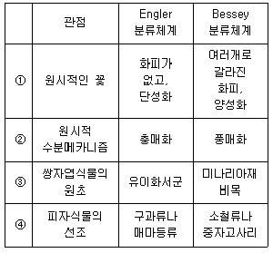
- ①
- ②
- ③
- ④
(정답률: 50%)
10. 각 식물분류에 대한 다음 설명 중 옳지 않은 것은?
- 은행나무는 나자식물에 속한다.
- 솔잎란에 생활사는 포자체기가 우세한 반면, 배우체는 작고, 포자체와 분리되어 지하에서 자란다.
- 바위손속은 이형포자를 가진다.
- 나자식물의 종자는 배, 배유, 종자피로 구성되어 있다.
(정답률: 52%)
11. 다음 중 대칭성으로 구분할 때 방사대칭동물에 해당하는 것은?
- 자포동물
- 편형동물
- 선형동물
- 태형동물
(정답률: 66%)
12. 다음 중 우수 2회 우상복엽(even-bipinnate leaf)은?
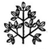
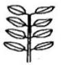
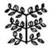
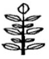
(정답률: 58%)
13. 다음 중 무한화서(indeterminate inflorescence)에 해당되지 않는 것은?
- 총상화서(raceme)
- 산방화서(corymb)
- 산형화서(umbel)
- 취산화서(cyme)
(정답률: 78%)
14. 다음은 종과 관련된 용어이다. ( )안에 적합한 것은?
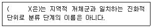
- 뎀(deme)
- 숙주(host)
- 형(form)
- 군(group)
(정답률: 52%)
15. 다음 중 국제식물명명규약에 명시된 6가지 원칙으로 가장 거리가 먼 것은?
- 식물명명규약은 동물명명규약과는 별도로 정한다.
- 분류군의 명칭은 선취권(priority)에 따른다.
- 각 분류군은 옳은 이름은 단 하나이다.
- 식물명명규약은 특별한 제한이 없는 한 소급력이 없다.
(정답률: 75%)
16. 단계동군(nonophyletic group)에 관한 설명 중 가장 적합한 것은?
- 공통원시험질에 의해 정의되는 자손분류군을 제외한 분류군
- 공통조상만 포함하는 군
- 공통조상과 이로부터 유래된 모든 자손분류군들을 포함하는 군
- 서로 다른 조상으로부터 유래되었으나 유전적으로 동일한 자손분류군들을 포함하는 군
(정답률: 67%)
17. 현대계통분류학에 사용되는 전형질분석(phenetics)방법으로 가장 거리가 먼 것은?
- 가능한 한 많은 분류형질을 활용한다.
- 수렴진화 및 평행진화 형질의 과다사용은 분석 결과에 부정적으로 작용한다.
- 전형질 분석의 운영분류 단위를 OTU라 한다.
- 경험적 학문이 아닌 추론적 학문이므로 생식기관 등 중요한 형질에는 가중치가 부여된다.
(정답률: 63%)
18. 연체동물의 강 명칭과 그 강에 해당되는 종류의 연결로 옳은 것은?
- 다판강 - 군부
- 복족강 - 대합
- 부족강 - 오징어
- 두족강 - 물달팽이
(정답률: 75%)
19. 다음은 콩과(콩목)의 아과(콩과)에 대한 검색표이다. ( )안에 알맞은 것은?
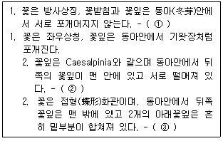
- ① 실거리나무아과 ② 미모시아과, ③ 콩아과
- ① 미모시아과, ② 콩아과, ③ 실거리나무아과
- ① 실거리나무아과, ② 콩아과, ③ 미모시아과
- ① 미모시아과, ② 실거리나무아과, ③ 콩아과
(정답률: 55%)
20. 수꽃은 유이화서(또는 단전화서)에 달리고, 열매는 견과로 총포가 붙어서 이루어진 컵 모양의 각두에 붙는 것은?
- 너도방나무과
- 뽕나무과
- 매자나무과
- 버종나무과
(정답률: 62%)
2과목: 환경생태학
21. 생태계 내에서의 물질순환에 관한 설명으로 가장 적합한 것은?
- 인은 자연계에서 부존량이 낮은 편이고, 중성 내지는 알칼리성 조건에서 Ca2+, Mg2+ 등 2가 양이온에 의해 쉽게 침전물을 형성하므로 순환율이 매우 낮다.
- 수소의 가장 큰 저장소는 물이고, 물은 지구 전체 물중 75% 정도가 순환에 관여하므로 수소 순환율도 매우 높은 편이다.
- 탄소의 순환에서 탄소의 형태는 주로
 형태로 존재한다.
형태로 존재한다. - 자연적인 황은 +4가의 산화물를 가지며, 단일 산화수로 인해 순환과정은 단순하다.
(정답률: 53%)
22. 교목이 포함된 천이계열의 경우, 천이의 초기단계에서 침입하게 되는 목본식물의 일반적인 특징에 대한 설명으로 가장 거리가 먼 것은?
- 잎의 크기가 작다.
- 생장이 느리다.
- 키가 크고 가늘다.
- 잎 수가 많다.
(정답률: 68%)
23. 다음은 무엇에 관한 설명인가?
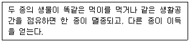
- Allee의 효과
- 경쟁배타의 원리
- 도서생물지리설
- 공진화설
(정답률: 89%)
24. 다음 중 개체군내 개체들의 3가지 공간분포에 해당하지 않는 형은?
- 균일형(규칙형)
- 불규칙형(임의형)
- 집중형
- 수직형
(정답률: 80%)
25. 복사와 관련된 법칙 중 “주어진 온도에서 이론상 최대에너지를 복사하는 가상적인 물체를 흑체라 할 때 흑체복사를 하는 물체에서 방출되는 복사에너지는 절대온도의 4승에 비례한다.”는 것에 해당하는 것은?
- 스테판-볼츠만의 법칙
- 비인의 변위법칙
- 플랑크 법칙
- 헨리의 법칙
(정답률: 82%)
26. 다음 중 해수의 특성으로 옳지 않은 것은?
- ph는 약 8.2로서 약칼칼리성을 가진다.
- 해수의 주요 성분 농도비는 일정하다.
- 해수의 Mg/Ca는 10 정도로 담수의 2∼3에 비해 크다.
- 해수의 강전해질로서 1L당 35g 정도의 염분을 함유한다.
(정답률: 53%)
27. 지구로 들어오는 태양광선 중 우주공간으로 반사되지 않고 대기 중 기체에 흡수되지 않는 상태로 지구 표면에 도달하는 비율은?
- 약 5%
- 약 10%
- 약 50%
- 약 95%
(정답률: 48%)
28. 대기 중 CO2에 관한 설명으로 옳은 것은?
- 온실가스의 온실효과에 대한 기여도는 CO2 > N2O > CFC 11 > CH4 순이다.
- 대기 중 CO2 농도는 가을과 겨울은 증가되고, 봄과 여름에는 감소하는 경향이 있다.
- CO2의 체류기간은 약 500년 정도이다.
- 대기 중 CO2는 식물에 의한 흡수량이 가장 많다.
(정답률: 62%)
29. 다음 두 군집 사이의 유사도 지수(S)는?
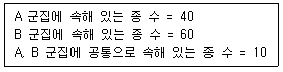
- 0.1
- 0.2
- 0.3
- 0.4
(정답률: 74%)
30. 분석 장치구성이 회전섹터, 광학필터, 시료셀, 검출기, 증폭기, 지시계 등으로 구성되는 분석방법은?
- 비분산 적외선 분석법
- 흡광광도법
- 가스크로아토그래프법
- 전기전도도법
(정답률: 71%)
31. 다음 중 자동차 배출가스가 광산화반응을 일으킬 때 빛 아크 용접시 발생하는 중요한 자극제로서 코와 눈에 자극을 주고 호흡기에 강력한 자극제로 작용하는 2차 대기오염물질은?
- 납
- 오존
- 다이옥신
- 수은
(정답률: 65%)
32. 다음 천이와 관련된 용어 설명 중 옳지 않은 것은?
- 천이가 시작되는 장소의 수분 조건에 따라서 물에서 시작되는 천이계열을 수생천이계열이라 한다.
- 천이의 결과 군집이 최종적으로 안정된 상태에 달하였을 때를 극상이라 한다.
- 우점하는 종이 초본에서 목본으로 변하는 천이를 2차 천이라고 하며, 1차 천이에 비해 진행속도가 느리다.
- 기후 변동이 없는 경우에도 군집의 외적 요인에 의하여 천이가 주도되는 경우가 있는데 천이과정에서 이러한 요인을 타발적 요인이라 한다.
(정답률: 89%)
33. 다음 그림은 이상적인 개체군 생장곡선이다. 이에 대한 설명으로 옳지 않은 것은?
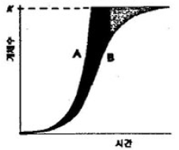
- A는 J자형 생장곡선, B는 S자형 생장곡선이라고 한다.
- A와 B간이 차이는 환경저항에 의해 생긴다.
- 대부분의 개체군의 생장곡선은 A와 B 사이에 위치한다.
- A 생장곡선은 로지스트 생장곡선이라고도 하며, 환경수용능력 (K)을 변수로 이용하여 수식화한다.
(정답률: 78%)
34. 다음은 암모니아의 질산화에 관한 설명이다. ( )안에 알맞은 맞은 것은?
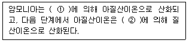
- ① Azotobacter, ② Rhizobium
- ① Rhizobium, ② Azotobacter
- ① Nitrosomonas, ② Nirtobacter
- ① Nirtobacter, ② Nitrosomonas
(정답률: 75%)
35. 다음 중 해양생물의 서식지로서 연안천해역(연안역:neritic)에 해당하지 않은 것은?
- 조간대
- 심해대
- 상부천해대
- 하부천해대
(정답률: 91%)
36. 산호초에 대한 설명으로 가장 거리가 먼 것은?
- 육지와 바다의 상대적인 관계에 따라 거초(fringing reef), 보초(barrier reef), 환초(atoll) 등으로 나눈다.
- 산호초가 서식하기 좋은 최적 온도는 10∼15℃이고, 한류의 영향을 받는 지역에는 서식하지 않는다.
- 산호초에서 실제 살아있는 부분은 얇은 표면뿐이며, 그 아래는 죽은 골격인 탄산칼슘으로 되어 있다.
- 일반적으로 하조대로부터 깊이 50m 정도까지 서식한다.
(정답률: 63%)
37. 형기 상태에서는 유기물 분해에 관여하지 않는 생물군은? (단, 고등동물의 특정 근육세포는 제외)
- bacteria
- ferns
- protozoa
- yeasts
(정답률: 75%)
38. 다음 중 식수오염(수인성 전염병)과 가장 밀접한 지표는?
- 대장균군
- EC
- COD
- BOD
(정답률: 87%)
39. 툰드라(tundra)지역에 대한 설명으로 옳지 않은 것은?
- 토양층에 있어 영구동토가 나타난다.
- 북극에 가까운 고위도에서 나타난다.
- 긴 겨울은 건조하고, 여름은 짧다.
- 상록 관목과 교목이 우정한다.
(정답률: 71%)
40. 호소 및 하천주변의 식생대에 있어서 침수식물에 해당하는 것은?
- 개구리밥
- 부들
- 택사
- 검정말
(정답률: 80%)
3과목: 형태학
41. 다음 중 1기생장의 뿌리의 밑에서 위쪽으로의 순서를 바르게 나타낸 것은?
- 근관 → 정단분열조직 → 신장부분 → 뿌리털부분
- 신장부분 → 근관 → 정단분열조직 → 뿌리털부분
- 근관 → 신장부분 → 뿌리털부분 → 정단분열조직
- 정단분열조직 → 근관 → 신장부분 → 뿌리털부분
(정답률: 70%)
42. 다음은 해면에 관한 설명이다. ( )안에 가장 적합한 것은?
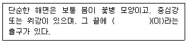
- 소공(pore)
- 대공(osculum)
- 동정(collar)
- 식포(food vacuol)
(정답률: 77%)
43. 다음 중 저작형(Chewing type)구기를 갖는 곤충은?
- 매미류
- 진딧물류
- 깍지벌레류
- 메뚜기류
(정답률: 83%)
44. 다음 ＜보기＞중 재(wood)에 대한 설명으로 옳은 것은?
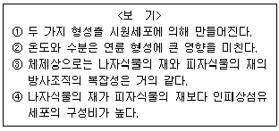
- ①, ②
- ①, ③
- ②, ④
- ③, ④
(정답률: 40%)
45. 남성과 여성에서의 호르몬 작용에 대한 설명으로 가장 거리가 먼 것은?
- 황체형성호르몬은 남성의 정자형성을 자극하며, 일생동안 분비된다.
- 남서의 이차성징이 나타나는 것은 테스토스테론이 주 기능을 담당한다.
- 여성은 황체형성호르몬에 의해 배란이 촉진된다.
- 자궁내막의 발달은 에스트로겐과 프로게스트론에 의해 조절된다.
(정답률: 72%)
46. 다음은 엽서(leaf arrangement)에 관한 설명이다 ( )안에 알맞은 것은?
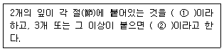
- ① 호생, ② 대생
- ① 호생, ② 윤생
- ① 대생, ② 윤생
- ① 윤생, ② 대생
(정답률: 76%)
47. 2기생장을 하는 쌍떡잎식물 또는 겉씨식물의 줄기나 뿌리에서 표피는 다음 중 어떤 조직으로 대체되는가?
- procambium
- ground meristem
- periderm
- parenchyma
(정답률: 50%)
48. 배를 먹을 때 그 과육에서 모래와 같은 것이 씹히는데 이것은 어떤 조직의 무슨 세포인가?
- 후벽조직 - 보강세포
- 후강조직 - 섬유세포
- 후각조직 - 보강세포
- 후벽조직 - 섬유세포
(정답률: 63%)
49. 다음 중 석회질의 작은 골편이 두터운 체벽 근육 속에 흩어져 있으며, 수수목, 순수목, 우족목 등이 속하는 것은?
- 해삼강
- 성계강
- 거미불가사리강
- 불가사리강
(정답률: 67%)
50. 사람의 몸에 기생하는 간디스토마(Chlonorchis sinensis) 의 생활사에서 감염된 물고기를 사람이 먹게 되었을 때 부화되는 유생으로 가장 적합한 것은?
- 미라시디움(miracidium)
- 레디아(redia)
- 세르카리아(cercaria)
- 메타세르카리아(metacercaria)
(정답률: 72%)
51. 과피에 관한 설명으로 옳지 않은 것은?
- 화탁, 총포, 약, 화탁통과 같은 상피 주위의 부분이 함께 발달하여 과피가 된 열매를 가과(flase fruit)라 한다.
- 복숭아의 딱딱한 핵은 종피가 아니고 과피에 해당된다.
- 심피가 발달하여 과피가 된 열매를 진과(true fruit)라 한다.
- 이생심피이며, 과피와 종피가 융합되어 있는 것을 낭과라고 한다.
(정답률: 30%)
52. 다음은 어류의 심장에 관한 설명이다. ( )안에 알맞은 것은?
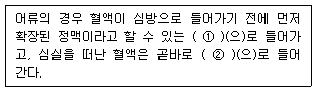
- ① 동맥원추, ② 정맥동
- ① 정맥동, ② 동맥원추
- ① 배대동맥, ② 정대동맥
- ① 정대동맥, ② 배대동맥
(정답률: 60%)
53. 다음 중 식물 표피조직에 해당하지 않는 것은?
- 공변세포(guard cell)
- 뿌리털(root hair)
- 모용(trichome)
- 내피(endodermis)
(정답률: 60%)
54. 다음 ＜보기＞중 뿌리에 대한 설명으로 옳은 것은?
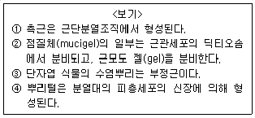
- ①, ③
- ①, ④
- ②, ③
- ②, ④
(정답률: 46%)
55. 다음은 열매의 종류에 관한 설명이다. ( )안에 알맞은 것은?
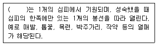
- 시과
- 골돌과
- 협과
- 다화과
(정답률: 70%)
56. 식물체에서 표피의 큐티클층에 대한 설명으로 옳지 않은 것은?
- 박테리아나 균류의 침입을 막는다.
- 표피를 방수처리하여 수분을 보유한다.
- 자외선을 차단하여 햇빛에 의한 돌연변이로부터 DNA를 보호한다.
- 친수성의 섬유소가 주 구성성분이다.
(정답률: 77%)
57. 다음 중 촉각(antenna)이 없는 동물은?
- 거미
- 메뚜기
- 게
- 노래기
(정답률: 54%)
58. 날개를 가지고 있는 곤충(유시류)들 중 고시류(Palaeoptera)에 속하는 것은?
- 나비목과 벌목
- 벼룩목과 매미목
- 하루살이목과 잠자리목
- 파리목과 모기목
(정답률: 70%)
59. 크란츠 해부(Krantz anatomy)에 관한 설명으로 옳지 않은 것은?
- C4 식물에서 발견된다.
- 책상 및 해면유조직이 구분되지 않고, 유관속초세포들과 엽육세포들이 밀접하게 동심원 모양으로 배열된다.
- 유관속초세포의 엽록체는 크며, 그라나(grana)가 잘 발달되어 있고, 녹말분자를 가지지 않는다.
- 엽육세포의 엽록체는 그라나(grana)가 발달되어 있으나, 녹말입자를 가지지 않는다.
(정답률: 54%)
60. 다음 중 모두 횡운근인 것은?
- 내장근, 심장근
- 심장근, 골격근
- 골격근, 평활근
- 평활근, 내장근
(정답률: 60%)
4과목: 보존 및 자원생물학
61. 생물다양성을 보전함으로써 얻을 수 있는 간접적 경제가치로 가장 거리가 먼 것은?
- GDP 증대
- 수자원과 토양자원의 보호
- 기후 조절
- 폐기물 처리
(정답률: 64%)
62. 핵심종(중추종, keystone species)을 구분해 내는 것은 보전생물학적 측면에서 여러 가지 중요성을 지니는데, 이 핵심종에 대한 설명으로 가장 거리가 먼 것은?
- 핵심종의 멸종은 연쇄적으로 여러 다른 종의 소멸과 연계되어 있다.
- 생물 서식지가 개발될 때 일차적으로 핵심종은 구분되어 사전 이식 또는 이주를 통한 서식지와 보전을 추진해야 한다
- 생태계 내에서 어느 특정 종의 보호를 위해서는 그와 연관된 핵심종의 보호가 동시에 필요하다.
- 핵심종이 제거되면 생태계의 거의 모든 영양 단계에서 생물다양성이 감소되어 궁극적으로 생태계가 붕괴될 수 있다.
(정답률: 57%)
63. 식물원에 대한 설명 중 옳지 않은 것은?
- 열대지방에서 식물종이 다양하므로 주요 식물원은 대부분 열대지방에 위치한다.
- 건조표본을 통해 식물의 분포나 서식지 요구도에 대한 정보를 제공한다.
- 대중에게 보전의 중요성을 교육시키는 역할을 수행한다.
- 희귀종과 위험종의 재배에 많은 비중을 두고 있다.
(정답률: 83%)
64. 개체군의 크기가 작아지면서 생기는 일반적인 현상으로 가장 거리가 먼 것은?
- 유전적 다양성과 변이성의 소실
- 유전적 부동
- 근친 교배의 증가
- 진화적 유연성의 증가
(정답률: 76%)
65. 생물 다양성 보호를 위해 국제적인 공동 협력이 필요한 이유로 가장 거리가 먼 것은?
- 종은 흔히 국가간의 장벽을 넘어 이동한다.
- 종이나 생태계를 위협하는 모든 문제들은 항상 국제적으로만 발생한다.
- 생물 다양성의 이익은 국제적인 중요성을 가진다.
- 생물을 수출하는 국가에서는 수출량을 충당하기 위해 자원의 과도한 이용이 초래될 수 있다.
(정답률: 82%)
66. 생물다양성 측정에 사용되는 방법 중 단일 군집내의 종주를 의미하며, 종 풍부도 개념에 가장 가까운 측정방법은?
- delta diversity
- gamma diversity
- beta diversity
- alpha diversity
(정답률: 72%)
67. 다음 중 종자은행의 활동에 있어 중추적인 기능을 수행하는 국제기구는?
- 생물분류협회(TA)
- 세계야생생물거래보호협회(WWAA)
- 야생생물보전관리협회(WBCCA)
- 국제농업연구자문단(CGIAR)
(정답률: 88%)
68. 동물원에서 사육종의 생식률을 높이기 위한 일반적인 방법으로 가장 거리가 먼 것은?
- 양모 양육
- 인공 수정
- 인공 부화
- 유전공학적 방법을 이용한 품종 개량
(정답률: 82%)
69. 다음 중 생물다양성 감소의 원인으로 보기 어려운 것은?
- 서식지 약화
- 외래종 도입
- 생물종의 과도한 남획
- 인구감소
(정답률: 89%)
70. 다음 중 보전생물학의 목적을 가장 명확하게 설명한 것은?
- 종, 군집, 생태계에 대한 인간 활동을 명확히 이해하고 종의 절멸을 막기 위한 실질적인 보전방법을 발전시키는 것
- 종이 절멸되는 것을 막기 위해 인위적으로 번식을 유도하는 것
- 절멸되거나 절멸의 위험이 있는 종을 동물원 또는 식물원으로 모두 가져와 잘 기르는 것
- 파괴된 환경을 파괴되기 이전의 상태로 되돌리는 것
(정답률: 84%)
71. 10m×10m의 방형구에 출현한 종과 개체수는 다음과 같았다 Shannon-Wiener에 의한 종다양성 지수는? (단, Shannon-Wiener의 식 H'=-∑pi log pi를 이용, log 0.2=-0.7, log 0.3=-0.5, log 0.4=-0.4, log 0.5=-0.3, log 0.6=-0.2로 할 것)
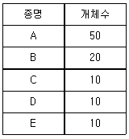
- 0.59
- 0.45
- 0.32
- 0.26
(정답률: 38%)
72. 다음 중 훼손된 생물군집과 생태계를 복원하는 데 이용될 수 있는 Bradshaw의 4가지 접근 방법에 해당하지 않는 것은?
- 방치
- 회복
- 보전
- 대체
(정답률: 65%)
73. 다음 습지 중 람사르 습지로 지정되지 않은 것은?
- 신안 장도습지
- 순천만 갯벌·보성벌교 갯벌
- 회양습지
- 물영아리오름
(정답률: 63%)
74. 맥아더와 윌슨의 도서생물지리모형에 대한 설명으로 가장 거리가 먼 것은?
- 좁은 면적에 비해 넓은 면적에 더 많은 종이 산다.
- 면적이 넓을수록 지역적 환경과 군집형이 다양하다.
- 넓은 면적에서 종들이 절열될 확률이 높다.
- 이 모형은 훼손된 서식지에 둘러싸인 국립공원 같은 곳에서도 적용되었다.
(정답률: 71%)
75. 샤퍼가 1981년 정의한 MVP(최소 생존 개체군)에 관한 설명으로 가장 거리가 먼 것은?
- 가까운 미래까지 생존이 매우 높은 확률로 예측될 수 있는 개체군의 최소 크기를 말한다.
- 한 종의 보존을 위해 필요한 개체수에 대한 양적인 추정이 가능하다.
- 자연재해 및 유전적인 임의 변화를 제외한 인간에 의한 환경파괴로 인한 1000년 동안의 생존확률 99%를 지니는 최소 크기의 유동 개체군을 뜻한다.
- 생존 활률 및 기간은 다른 수치로 변경할 수 있는 시험적 특성이 있는 개념이다.
(정답률: 58%)
76. 다음 중 보전생물학의 중추를 이루는 분야와 가장 거리가 먼 것은?
- genetics
- taxonomy
- ecology
- physics
(정답률: 80%)
77. 지구상에는 여러 번의 대절멸(mass extinction) 사건이 있었는데, 이 중 가장 거대한 절멸 사건으로 77~96% 정도로 추산되는 해양 동물종이 사라진 계기는?
- 플라이스토신기(Pleistocene)
- 트라이아스기(Triassic)
- 페르미안기(Permian)
- 데본기(Devonian)
(정답률: 86%)
78. 라이트(Wright)는 생식에 관여하는 개체수(Ne)와 관련시켜 세대당 기대되는 이형접합률의 감소량(△F)을 구하는 식을 제시하였다. 50개체가 생식에 관여하는 개체군에서 희귀한 대립유전자의 소실로 인하여 감소되는 이형접합률은 세대당 어떻게 변화되는가? (단,
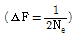
을 이용)- 1% 감소
- 25% 감소
- 50% 감소
- 75% 감소
(정답률: 48%)
79. 세계자연보호재단에서 정의한 생물다양성 범주로 가장 거리가 먼 것은?
- 유전적 다양성
- 형태적 다양성
- 군집 및 생태계 다양성
- 종 다양성
(정답률: 75%)
80. 다음 중 일반적으로 난저장성(recalcitrant) 종자자원에 해당하는 것은?
- 옥수수
- 코코아
- 감자
- 쌀
(정답률: 88%)
5과목: 자연환경관계법규
81. 개발제한구역의 지정 및 관리에 관한 특별조치법 시행규칙상 수도권 및 부산권의 개발제한구역에 설치할 수 있는 축사의 규모기준으로 옳은 것은?
- 1가구당 기존 면적을 포함하여 500제곱미터 이하
- 1가구당 기존 면적을 포함하여 1000제곱미터 이하
- 1가구당 기존 면적을 포함하여 2500제곱미터 이하
- 1가구당 기존 면적을 포함하여 5000제곱미터 이하
(정답률: 46%)
82. 다음은 습지보전법령상 습지보전기본계획의 시행에 필요한 조치이다. ( )안에 알맞은 것은?
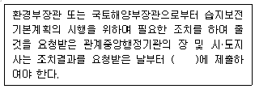
- 1월 이내
- 3월 이내
- 6월 이내
- 12월 이내
(정답률: 47%)
83. 야생동·식물보호법령상 생물자원의 분류·보전 등에 관한 관련 전문가로 가장 거리가 먼 것은?
- 「국가기술자격법」에 의한 생물분류기사
- 생물자원 관련 분야의 석사학위 이상 소지자로서 동 분야에서 1년 이상 종사한 자
- 「국가기술자격법」에 의한 자연환경기사
- 생물자원 관련 분야의 학사학위 이상 소지자로서 동 분야에서 3년 이상 종사한 자
(정답률: 60%)
84. 야생동·식물보호법규상 환경부령이 정하는 기준 및 방법 등에 따른 인공증식을 위한 포획허가대상 야생동물에 해당하지 않는 것은?
- 물닭
- 세뿔투구
- 농구렁이
- 다람쥐
(정답률: 48%)
85. 다음은 환경정책기본법상 용어의 정의이다. ( )안에 알맞은 것은?
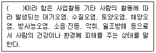
- 환경오염
- 환경훼손
- 환경용량
- 환경파괴
(정답률: 82%)
86. 독도 등 도서지역의 생태계 보전에 관한 특별법상 특정도서 안에서 인화물질을 이용하여 음식물을 짓거나 야영을 한 자에 대한 과태료 부과기준으로 옳은 것은?
- 100만원 이하의 과태료를 부과한다.
- 300만원 이하의 과태료를 부과한다.
- 500만원 이하의 과태료를 부과한다.
- 1천만원 이하의 과태료를 부과한다.
(정답률: 44%)
87. 야생동·식물보호법규상 멸종위기야생동·식물 Ⅰ급에 해당하지 않는 것은?
- 큰바다사자
- 표범
- 대륙사슴
- 산양
(정답률: 46%)
88. 자연공원법규상 토지 개간의 경우 공원관리청이 징수하는 정용(또는 사용) 기준요율로 옳은 것은? (단, 기타 다른 법령에서 별도로 정한 기준 등은 고려하지 않음)
- 수확예상액의 100분의 5이상
- 수확예상액의 100분의 10이상
- 수확예상액의 100분의 25이상
- 수확예상액의 100분의 5이상
(정답률: 64%)
89. 다음은 자연환경보전법상 생태·자연도의 작성·활용기준이다. ( )안에 알맞은 것은?
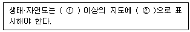
- ① 2만5천분의 1. ② 실선
- ① 2만5천분의 1. ② 점선
- ① 5만분의 1. ② 실선
- ① 5만분의 1. ② 점선
(정답률: 64%)
90. 산지관리법상 산림청장이 지정·육성할 수 있는 산지복구전문기관의 업무와 가장 거리가 먼 것은?
- 형질변경된 산지의 복구
- 산림자원 육성을 위한 조사연구
- 형질변경된 산지의 복구설계·강리
- 형질변경된 산지의 자연친화적인 복구방법의 조사·연구 및 개발
(정답률: 60%)
91. 농지법규상 실습지 등으로 농지를 소유할 수 있는 공공단체 등의 범위에 해당하지 않는 것은?
- 「정신보건법」에 따른 정신의료기관(의료법인에 한정)
- 「문화유산과 자연환경자산에 관한 국민선택법」에 따른 국민신탁법인(문화유산과 자연환경자산의 보전을 목적으로 하는 경우에만 해당)
- 「폐수배출시설설치관리법」에 따른 수질오염방지시설(폐수의 영향평가를 목적으로 하는 경우에만 해당)
- 「축산법」에 따른 가축 등록기관 및 가축 검정기관
(정답률: 37%)
92. 백두대간 보호에 관한 법률상 보호지역 중 완충구역안에서 허용되지 않는 행위를 한 장에 대한 벌칙기준으로 옳은 것은?
- 7년 이하의 징역 또는 5천만원 이하의 벌금에 처한다.
- 5년 이하의 징역 또는 3천만원 이하의 벌금에 처한다.
- 3년 이하의 징역 또는 1천5백만원 이하의 벌금에 처한다.
- 1년 이하의 징역 또는 1천만원 이하의 벌금에 처한다.
(정답률: 67%)
93. 자연환경보전법규상 시·도지사 또는 지방환경관서의 장이 환경부장관에게 보고해야 할 위임업무 보고사항 중 “생태마을 지정실적”의 보고횟수 기준으로 옳은 것은?
- 수시
- 연 1회
- 연 2회
- 연 4회
(정답률: 73%)
94. 국토기본법상 국토종합계획에 관한 내용으로 옳은 것은?
- 국토해양부장관은 사회적·경제적 여건변화를 고려하여 매년마다 국토종합계획을 전반적으로 재검토하고 필요한 경우 이를 정비하여야 한다.
- 시·도지사는 국토종합계획의 내용을 소관업무와 관련된 정책 및 계획에 반영하여야 하며, 국토종합계획을 실행하기 위한 소관별 실천계획을 수립하여 국토해양부장관에게 제출하여야 한다.
- 국토해양부장관으로부터 국토종합계획을 조정할 것을 요청받은 지방자치단체의 장이 특별한 사유없이 이를 반영하지 아니하는 경우에는 국토해양부장관은 국토개발촉진위원회의 자문을 받아 이를 조정해야 한다.
- 국토해양부장관은 지방자치단체의 장이 행하는 국토계획 시행사업이 서로 상충되어 국토계획의 원활한 실시에 지장을 초래할 우려가 있다고 인정되어도 그 사업을 조정할 권한은 없다.
(정답률: 34%)
95. 환경정책기본법령상 도로변지역의 낮(06:00~22:00) 시간의 소음환경기준으로 옳은 것은? (단, 적용대상지역은 공업지역 중 준공업지역, 단위는 Leq dB(A))
- 60
- 65
- 70
- 75
(정답률: 48%)
96. 국토의 계획 및 이용에 관한 법률 시행령상 기반시설 중 광장 구분기준에 해당하지 않는 것은?
- 교통광장
- 일반광장
- 특수광장
- 건축물부설광장
(정답률: 56%)
97. 국토의 계획 및 이용에 관한 법률 시행령상 기반시설의 분류 중 “방재시설”에 해당하는 것은?
- 저수지
- 방송·통신시설
- 하수도
- 공동구·시장
(정답률: 61%)
98. 농지법상 농지에 해당하는 것은?
- 초지법에 의하여 조성된 토지
- 실제 토지현상이 일년성 식물재배지
- 배수장 수로 등 농지 개량시설 부지
- 농산물유통에 직접 사용되는 부지
(정답률: 40%)
99. 다음은 산지관리법규상 복구설계서 승인기준이다. ( )안에 알맞은 것은?
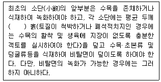
- 10센티미터 이상
- 30센티미터 이상
- 60센티미터 이상
- 100센티미터 이상
(정답률: 41%)
100. 국토기본법상 중앙행정기관의 장 또는 지방자치단체의 장이 수립할 수 있는 지역계획으로 가장 거리가 먼 것은? (단, 기타계획 등은 고려하지 않는다.)
- 수도권발전계획
- 광역권개발계획
- 개발촉진지구개발계획
- 공유수면매립계획
(정답률: 55%)